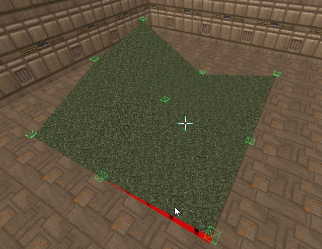

Visual vertices allow you to edit vertical vertex offsets in Visual mode.
You can select and edit them just like Things (except you can't move them horizontally).
You can use the "Delete" action (usually bound to Delete key) to clear z-offsets of selected vertices.
You can toggle the Visual vertices display from the Rendering toolbar or the "Toggle Visual Vertices" action.
Visual vertices with height offset (e.g. with some values in "zceiling" or "zfloor" UDMF fields) are colored using the "Info Line" color. Visual vertices without offsets are colored using the "Vertex" color. You can change these colors in Preferences -> Appearance.
Technical note №1: Visual vertices work only if a map is in UDMF map format.
Technical note №2: Visual vertices work only for triangular sectors.
It took approx. 30 seconds to create this wonderous terrain:

You can create much more elaborate terrains using Terrain Importer.